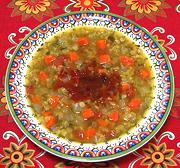

|
Red Lentil SoupSephardic / Spanish - Sopa de Lentejas Colorada | ||||
| Makes: Effort: Sched: DoAhead: |
3-1/2 qt *** 1-1/4 hrs Yes |
This soup is made by Sephardic Jews in Greece, but is basically a Spanish soup bearing a Spanish name. Lentil soups, both red and green, are poplar in Spain from Moorish influence. | |||
|
|
1-1/2 14 10 8 8 1/2 2 1 ------ 1/2 1/2 1/4 2 ------ 3 7 |
c oz oz oz oz c T --- t T t t --- T c |
Lentils, Red Tomatoes Onion Carrots Celery Parsley (1) Bay Leaves Lemon Juice -- Spicing Pepper, black Cumin Chili Powder (2) Salt ----------- Olive Oil ExtV Water |
When the Jews were expelled from Spain in 1492, they took many Spanish recipes with them. See Comments for additional details. Broth - (55 min - 10 min work)
|